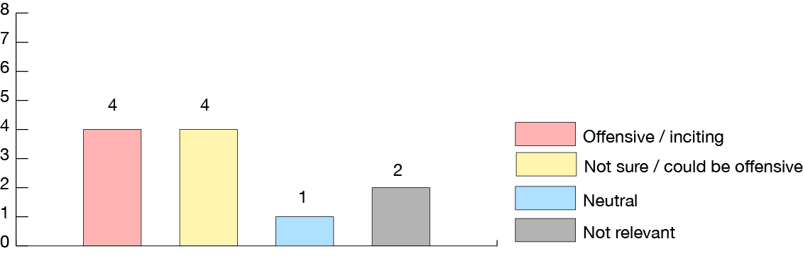
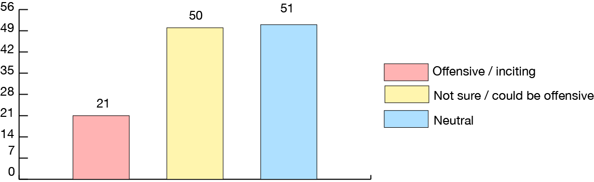

Original news webpage
The news was published on 10 July 2016
I selected the news "South Sudan fighting: Gunfire erupts again in Juba" to analyse the comment around this topic. The original post has 11 replies and 2 of them are advertisements. I tried to indentify and categorise them into "offensive", "may be offensive", "neutral", and "not relevant" groups.*
News shared on facebook
It was posted on Facebook on the same day.
Up until 18 Feb 2017, there are 284 people shared the post on facebook. It showed "157 comments" on Facebook, but in fact there were 122 direct comments and 65 replies to those comments. There are a total of 150 Facebook accounts involved in the discussion. The facebook page also showed that around 1.6K users has clicked the emotion icon under the post. I did the same analysis for the 122 direct comments under the Facebook post, the result is as followed.*
*This analysis may not be accurate as I don't have sufficient knowledge of their culture and language. For more details, please check the end of page for the lists of all the comments used for this analysis